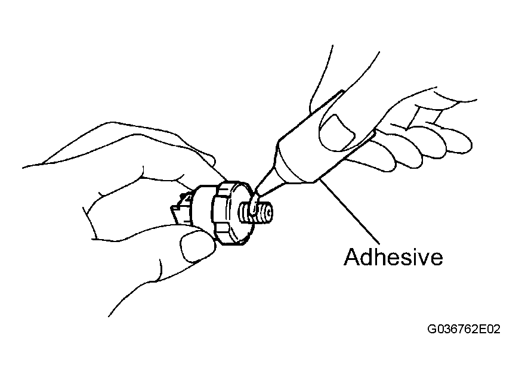

On-Vehicle Inspection
- CHECK ENGINE OIL LEVEL
- Warm up the engine, stop the engine and wait for 5 minutes. The oil level should be between the dipstick's low and full level marks.
If the oil level is low, check for leakage and add oil up to the full level mark.
NOTE: Do not add engine oil above the full level mark.
- Warm up the engine, stop the engine and wait for 5 minutes. The oil level should be between the dipstick's low and full level marks.
- CHECK ENGINE OIL QUALITY
- Check the oil for deterioration, water contamination, discoloring or thinning.
If the quality is visibly poor, replace the oil.
Oil grade: ILSAC multigrade engine oil is recommended. SAE 5W-30 is the best choice for this vehicle for good fuel economy and good starting in cold weather.
If SAE 5W-30 is not available, SAE 10W-30 may be used. However, it should be replaced with SAE 5W-30 at the next oil change.
- Check the oil for deterioration, water contamination, discoloring or thinning.
- CHECK OIL PRESSURE
- Disconnect the oil pressure switch connector.
- Using a 24 mm deep socket wrench, remove the oil pressure switch.
- Install an oil pressure gauge.
- Warm up the engine.
- Check the oil pressure under the following conditions.
Standard oil pressure
OIL PRESSURE SPECIFICATIONCondition Specified Condition Idle 29 kPa (0.3 kgf/cm2 , 4.2 psi) or more 3,000 rpm 150 to 550 kPa (1.5 to 5.6 kgf/cm2 , 22 to 80 psi) or more - Remove the oil pressure gauge.
- INSTALL OIL PRESSURE SWITCH
- Apply adhesive to 2 or 3 threads of the oil pressure switch.

Courtesy of © TOYOTA, LICENSE AGREEMENT TMS1002Adhesive: Part No. 08833-00080, THREE BOND 1344, LOCTITE 242 or equivalent
- Using a 24 mm deep socket wrench, install the oil pressure switch.
Torque: 15 N*m (153 kgf*cm, 11 ft.*lbf)
NOTE: Do not start the engine for at least 1 hour after installation of the switch. - Connect the oil pressure switch connector.
- Start the engine and check for engine oil leaks.
- Apply adhesive to 2 or 3 threads of the oil pressure switch.